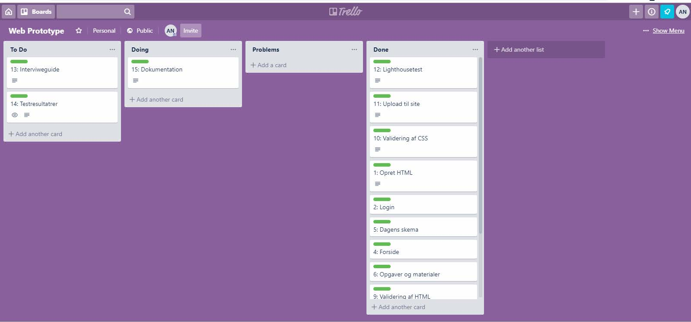
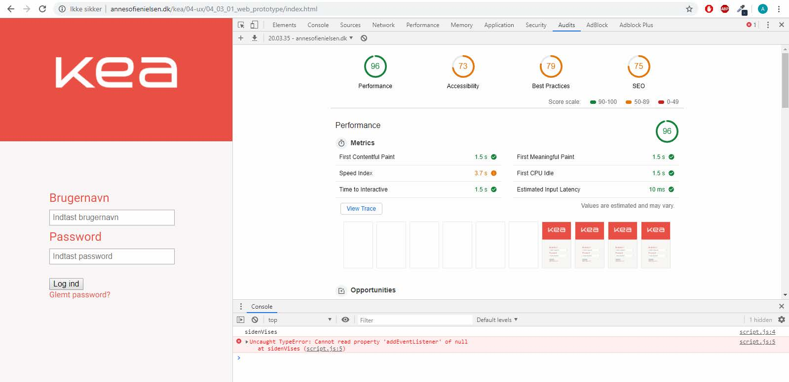

Projektplanlægning med Trelloboard som viser ugens opgaver. Da jeg desværre havde 2 sygedage under dette projekt, er har jeg ikke nået at gennemføre alle opgaverne, som det fremgår af boardet.

Websiden er testet med den indbyggede Lighthouse audits i inspectoren.